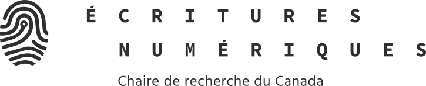
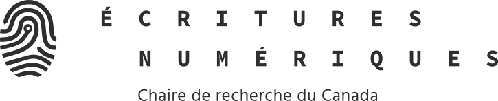

Margot Mellet - 22 Janvier 2024 - Soutenance de thèse - Université de Montréal
...et les doigts d'écrire se referment sur la paume
Recherche-création sur l'épaisseur de l'écriture
directeur.rice.s : Marcello Vitali-Rosati et Catherine Mavrikakis (UdeM) président de jury : Jean-Marc Larrue (UdeM) examinatrice externe : Isabelle Collet (Université de Genève) membre du jury : Markus Reisenleitner (York University)
 

Cette thèse sur l'épaisseur de l'écriture est plate
Fabrique *
Média *
Machine *
Page *
Matière *
« Unser Schreibwerzeug schreibt mit an unseren Gedanken. » (Lettre à Heinrich Köselitz , Nietzsche, 1882)
« Wie wir alle wissen und nur nicht sagen, schreibt kein Mensch mehr. »(« Es gibt keine Software », in Draculas Vermächtnis. Technische Schriften , Kittler, 1993)
« Notre outil d’écriture écrit avec/sur nos pensées. » (traduction personnelle effectuée à l'aide de DeepL.)
« Comme nous le savons tous, même si nous ne voulons pas nous l’avouer, aucun être humain n’écrit plus. » (Kittler, 2015, traduction par F. Vargoz)